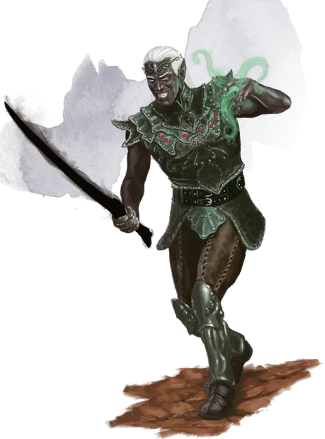

Теневой клинок
Shadow Blade
2 уровень, Иллюзия

Время сотворения 1 бонусное действие
Дистанция На себя
Компоненты В, С
Длительность Концентрация, вплоть до 1 минуты
Классы Волшебник, Колдун, Чародей
Вы сплетаете воедино нити тени, чтобы создать в ваших руках меч затвердевшего мрака. Этот магический меч существует до тех пор, пока заклинание активно. Он считается простым рукопашным оружием, которым вы владеете. Он наносит 2к8 урона психической энергией при попадании и обладает свойствами «лёгкое», «метательное» (дистанция 20/60) и «фехтовальное». Кроме того, когда вы используете меч для атаки цели, которая находится в тусклом освещении или темноте, вы совершаете бросок атаки с преимуществом.
Если вы роняете оружие или метаете его, оно рассеивается в конце хода.
После этого, пока заклинание активно, вы можете бонусным действием снова вызвать меч в вашу руку.
На больших уровнях. Когда вы накладываете это заклинание, используя ячейку заклинания 3-го или 4-го уровня, урон увеличивается до 3к8. Когда вы накладываете его с помощью ячейки заклинания 5-го или 6-го уровня, урон увеличивается до 4к8. Когда вы накладываете его с помощью ячейки заклинания 7-го уровня или выше, урон увеличивается до 5к8.